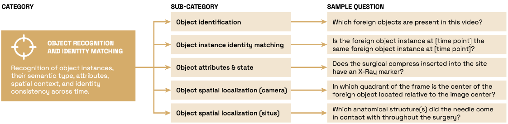
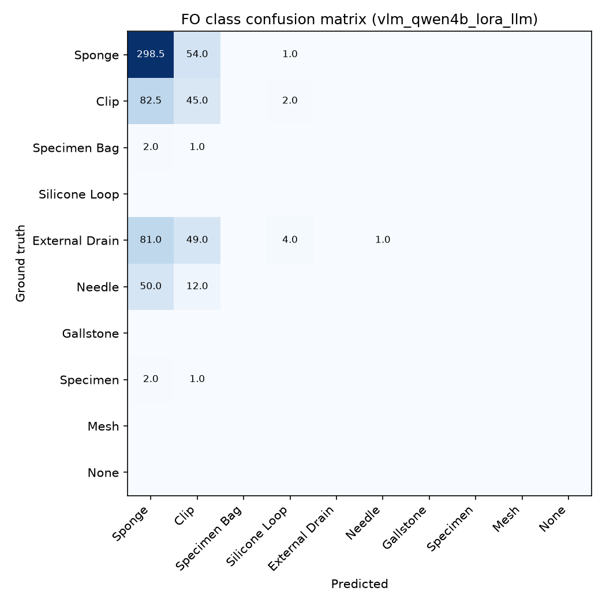
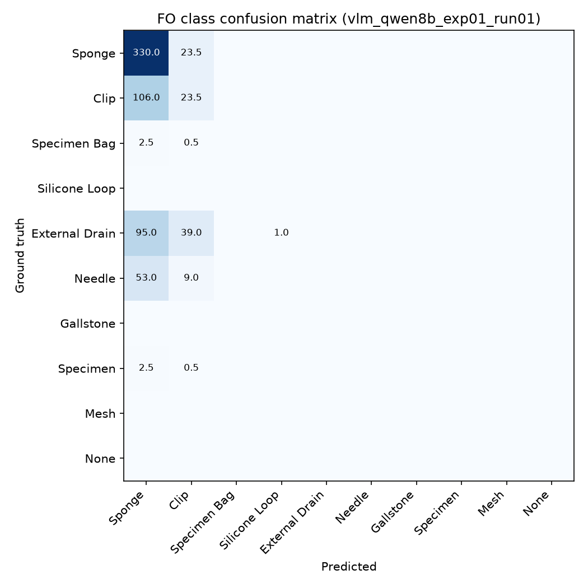
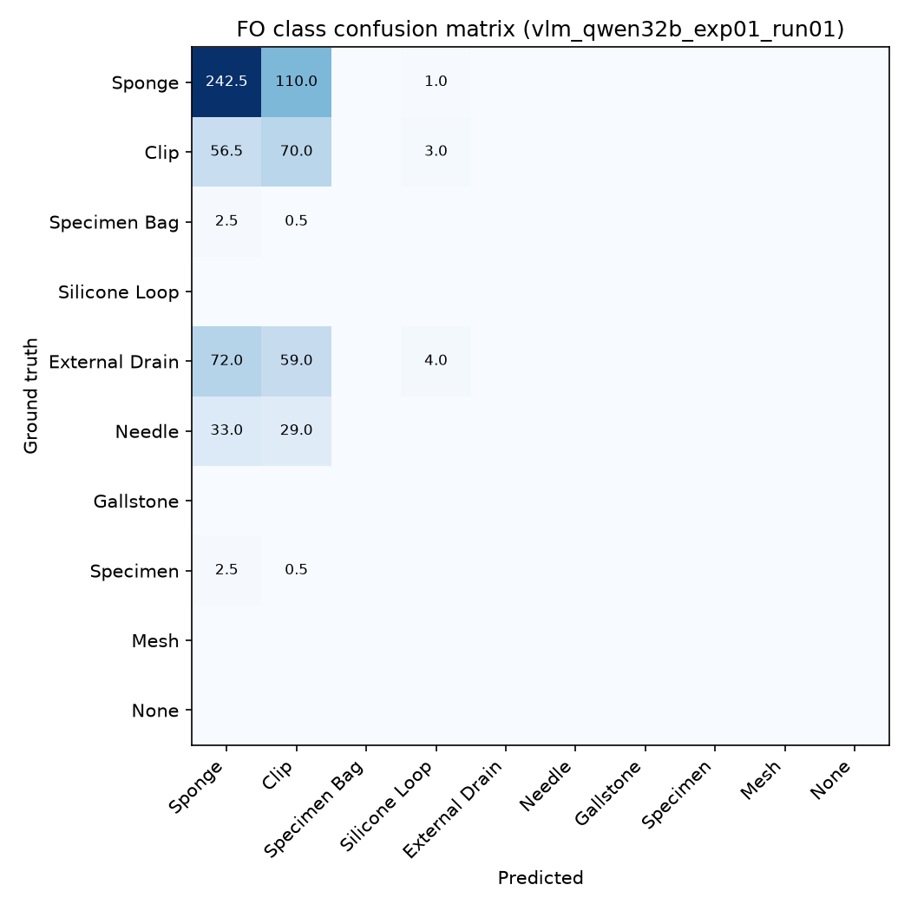
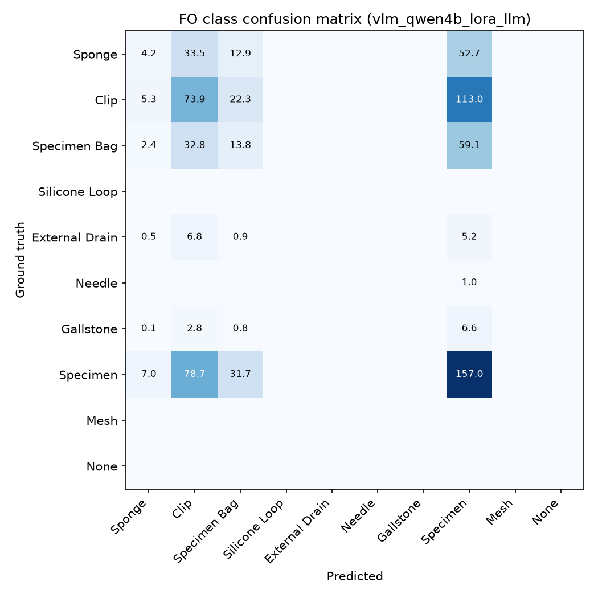
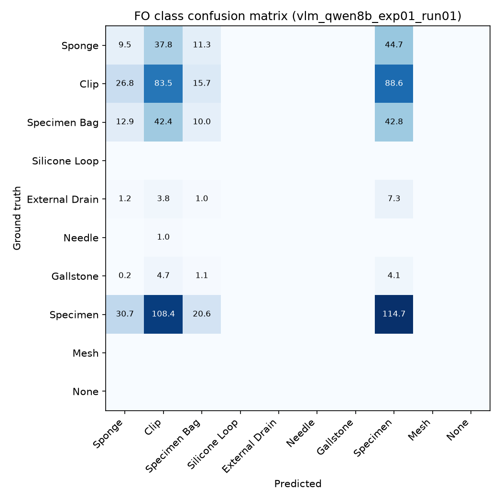
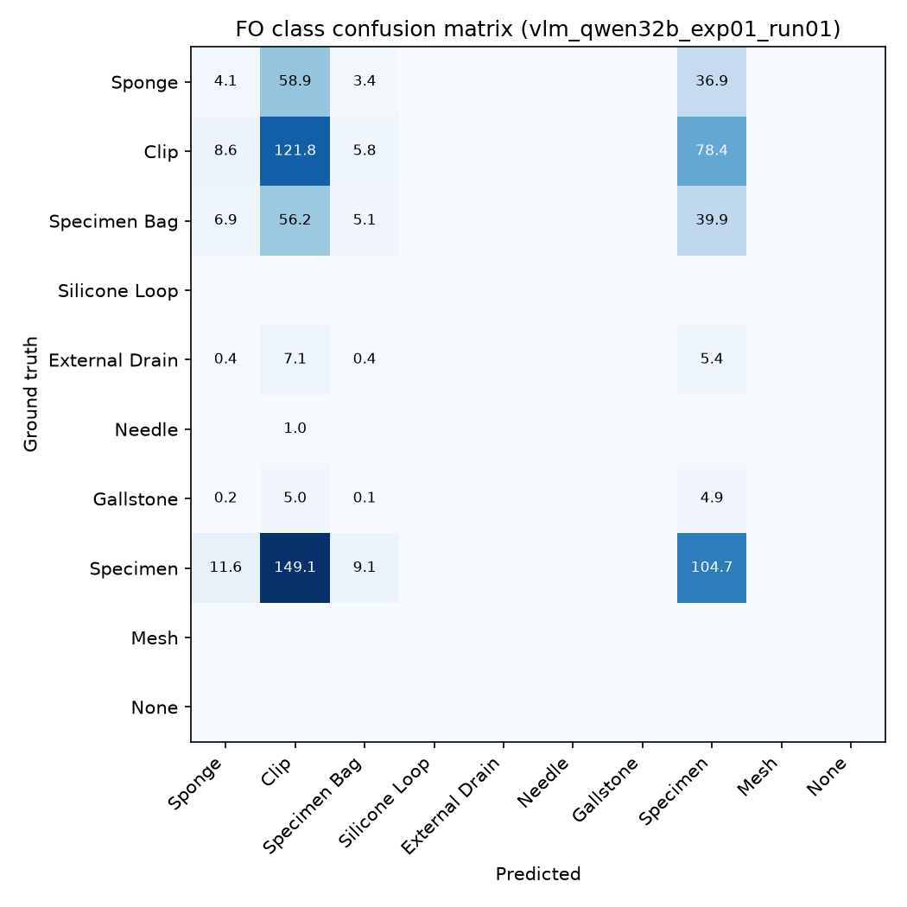

Two surgical QA datasets, covering different procedures
| Dataset | Procedure | Total QA pairs | Train | Test |
|---|---|---|---|---|
| heico | Colorectal surgery | 6,000 | 4,000 | 2,000 |
| lapchole | Cholecystectomy | 8,000 | 5,748 | 2,252 |

QA pairs by question type and dataset split
| Question type | heico train | heico test | lapchole train | lapchole test |
|---|---|---|---|---|
| Object identification | 1,820 | 966 | 2,176 | 866 |
| Object aggregation | 864 | 470 | 2,520 | 955 |
| Object attributes and state | 220 | 67 | 391 | 192 |
| Spatial localization · camera | 1,008 | 450 | 575 | 213 |
| Spatial localization · situs | 88 | 47 | 84 | 25 |
Qwen3-VL-4B-Instruct fine-tuned on the surgical QA data
| Subset | Base model accuracy | Fine-tuned accuracy |
|---|---|---|
| heico | 17.3% | 60.64% |
| lapchole | 11.3% | 33.10% |
LoRA applied to the language layers only.
Surgical procedure plus a list of all possible foreign objects, each with a detailed description.
Stratified evaluation · overall accuracy across all QA pairs
| Model | Fine-tuning | heico | lapchole |
|---|---|---|---|
| Qwen3-VL-4B-Instruct | Vanilla VLM | 17.30% | 11.32% |
| Qwen3-VL-4B-Instruct | LoRA · language only | 50.95% | 33.08% |
| Qwen3-VL-8B-Instruct | LoRA · language only | 52.20% | 32.10% |
| Qwen3-VL-32B-Instruct | LoRA · language only | 45.55% | 32.37% |
Qwen3-VL-4B-Instruct · LoRA language only · weighted accuracy by supra-category
Foreign-object confusion matrix · heico

Qwen4B LoRA · language only
Foreign-object confusion matrix · heico

Qwen8B LoRA · language only
Foreign-object confusion matrix · heico

Qwen32B LoRA · language only
Foreign-object confusion matrix · lapchole

Qwen4B LoRA · language only
Foreign-object confusion matrix · lapchole

Qwen8B LoRA · language only
Foreign-object confusion matrix · lapchole

Qwen32B LoRA · language only
Next steps to be defined